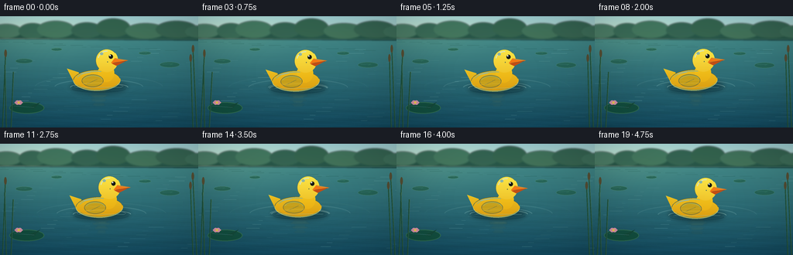
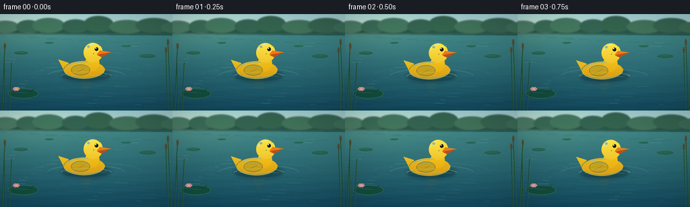

CODING AGENTS AS PIXEL WORLD MODELS
traex/GPT-5.6-Sol · mechanics_0011
点击播放 · 原生 RGB 像素
逐轮保存的候选
回放视频、检查图与代码变化。
每份候选均可单独播放。实际图片检查记录在下方工具轨迹中。
候选 01播放与检查图
点击播放 · 原生 RGB 像素


展开代码变化
--- 上一保存版本
+++ 本次保存版本
@@ -0,0 +1,321 @@
+from pathlib import Path
+import math
+import numpy as np
+from PIL import Image, ImageDraw, ImageFilter
+import artifact_io
+
+W, H, N = 256, 144, 20
+SS = 4
+SW, SH = W * SS, H * SS
+ROOT = Path(__file__).resolve().parent
+rng = np.random.default_rng(1107)
+
+
+def sc(v):
+ if isinstance(v, (tuple, list)):
+ return tuple(int(round(x * SS)) for x in v)
+ return int(round(v * SS))
+
+
+def ellipse(draw, box, fill, outline=None, width=1):
+ draw.ellipse(sc(box), fill=fill, outline=outline, width=sc(width) if outline else 1)
+
+
+def line(draw, xy, fill, width=1):
+ draw.line(sc(xy), fill=fill, width=max(1, sc(width)), joint='curve')
+
+
+def polygon(draw, pts, fill):
+ draw.polygon([sc(p) for p in pts], fill=fill)
+
+
+def gradient_in_mask(mask, top, bottom, y0=0, y1=None):
+ """Return an RGBA image with a vertical color gradient clipped by mask."""
+ if y1 is None:
+ y1 = SH
+ yy = np.arange(SH, dtype=np.float32)[:, None]
+ f = np.clip((yy - y0) / max(1, y1 - y0), 0, 1)
+ a = np.array(top, dtype=np.float32)[None, None, :] * (1-f[:, :, None]) + np.array(bottom, dtype=np.float32)[None, None, :] * f[:, :, None]
+ a = np.repeat(a, SW, axis=1).astype(np.uint8)
+ rgba = np.empty((SH, SW, 4), np.uint8)
+ rgba[:, :, :3] = a
+ rgba[:, :, 3] = np.array(mask, dtype=np.uint8)
+ return Image.fromarray(rgba, 'RGBA')
+
+
+def make_static_elements():
+ # Fixed high-frequency texture, softened so that it reads as water rather than grain.
+ noise_small = rng.normal(0, 1, (H, W)).astype(np.float32)
+ nimg = Image.fromarray(np.uint8(np.clip(noise_small * 24 + 128, 0, 255)), 'L')
+ nimg = nimg.resize((SW, SH), Image.Resampling.BICUBIC).filter(ImageFilter.GaussianBlur(sc(.45)))
+ return (np.array(nimg).astype(np.float32) - 128) / 128
+
+
+STATIC_NOISE = make_static_elements()
+
+
+def water_background(frame):
+ t = frame / N
+ Y, X = np.mgrid[0:SH, 0:SW]
+ x = X / SS
+ y = Y / SS
+ img = np.zeros((SH, SW, 3), dtype=np.float32)
+
+ # A soft, pale sky above the opposite bank.
+ sky_f = np.clip(y / 36, 0, 1)[..., None]
+ sky_top = np.array([155, 204, 208], np.float32)
+ sky_bot = np.array([197, 219, 200], np.float32)
+ img[:] = sky_top * (1-sky_f) + sky_bot * sky_f
+
+ # Pond gradient. Deeper/cooler close to camera.
+ wf = np.clip((y - 29) / (H - 29), 0, 1)[..., None]
+ near_horizon = np.array([64, 133, 133], np.float32)
+ foreground = np.array([18, 72, 93], np.float32)
+ water = near_horizon * (1-wf) + foreground * wf
+ water_mask = y >= 29
+ img[water_mask] = water[water_mask]
+
+ # Low-amplitude traveling ripples integrated into the color field.
+ waves = (2.8*np.sin(y*0.50 + x*0.030 + t*2.0*math.pi) +
+ 1.7*np.sin(y*1.17 - x*0.063 - t*3.0*math.pi) +
+ 1.0*np.sin(y*2.35 + x*0.11 + t*1.7*math.pi))
+ waves *= np.clip((y-35)/90, 0, 1)
+ for c, gain in enumerate((0.25, 0.63, 0.85)):
+ img[:, :, c] += waves * gain
+ img += STATIC_NOISE[:, :, None] * np.clip((y-30)/100, 0, 1)[:, :, None] * 2.1
+
+ # Warm glow from the upper left.
+ glow = np.exp(-(((x-41)/82)**2 + ((y-10)/42)**2))[:, :, None]
+ img += glow * np.array([18, 16, 6], np.float32)
+ img = np.clip(img, 0, 255).astype(np.uint8)
+ base = Image.fromarray(img, 'RGB').convert('RGBA')
+
+ # Distant, intentionally soft bank and foliage silhouettes.
+ far = Image.new('RGBA', (SW, SH), (0, 0, 0, 0))
+ d = ImageDraw.Draw(far, 'RGBA')
+ polygon(d, [(0,29),(0,22),(12,20),(22,23),(33,17),(45,21),(60,14),(73,20),
+ (88,17),(100,22),(115,15),(127,18),(139,12),(150,18),(163,16),
+ (177,22),(190,17),(205,20),(220,14),(232,19),(244,16),(256,19),(256,31)],
+ (27,75,61,235))
+ # Individual shrub crowns.
+ for cx, cy, rx, ry, col in [
+ (8,19,20,9,(36,92,67,190)),(42,19,18,10,(29,83,62,210)),
+ (72,17,24,11,(38,95,68,205)),(112,18,20,10,(28,78,59,215)),
+ (146,15,22,12,(32,81,58,220)),(188,19,26,10,(38,91,63,205)),
+ (228,17,27,11,(31,79,58,215)),(258,20,19,8,(35,86,63,210))]:
+ ellipse(d, (cx-rx, cy-ry, cx+rx, cy+ry), col)
+ far = far.filter(ImageFilter.GaussianBlur(sc(1.05)))
+ base = Image.alpha_composite(base, far)
+
+ # Thin bright horizon separates land from water.
+ details = Image.new('RGBA', (SW, SH), (0,0,0,0))
+ dd = ImageDraw.Draw(details, 'RGBA')
+ line(dd, (0,29.4,256,29.2), (197,220,195,115), .5)
+
+ # Reflections of the bank: quiet broken vertical/horizontal marks.
+ for k in range(34):
+ xx = (k * 37 + 9) % 270 - 7
+ yy = 31 + (k % 7) * 2.2
+ length = 5 + ((k*11) % 22)
+ color = (26, 77, 69, 34 + (k%4)*8)
+ line(dd, (xx, yy, xx+length, yy + .2*math.sin(k)), color, .6 + (k%3)*.25)
+ # Sunlit silver streaks, animated later with slight phase shift.
+ for k in range(45):
+ yy = 40 + (k * 17) % 97
+ xx = (k * 47 + frame * (1 + k%3)) % 290 - 18
+ length = 3 + (k * 13) % 18
+ alpha = 16 + (k%5)*7
+ line(dd, (xx, yy, xx+length, yy + .25*math.sin(k+t)), (151,213,211,alpha), .45+(k%3)*.3)
+ base = Image.alpha_composite(base, details)
+ return base
+
+
+def draw_lilies_and_reeds(base, frame):
+ t = frame / N
+ lay = Image.new('RGBA', (SW, SH), (0,0,0,0))
+ d = ImageDraw.Draw(lay, 'RGBA')
+ # Distant lily pads give immediate pond context.
+ for cx, cy, rx, ry in [(31,58,11,3.1),(219,63,13,3.6),(73,43,7,2),(187,48,8,2.2)]:
+ bob = .35*math.sin(frame*.25 + cx)
+ ellipse(d, (cx-rx,cy-ry+bob,cx+rx,cy+ry+bob), (31,91,70,175), outline=(91,150,103,90), width=.5)
+ polygon(d, [(cx,cy+bob),(cx+rx*.58,cy-ry*.7+bob),(cx+rx*.08,cy+.25+bob)], (40,113,81,185))
+ line(d, (cx-rx*.7,cy-1+bob,cx+rx*.25,cy-1.4+bob), (130,182,129,56), .45)
+ # Foreground lily pad with notch and a tiny pink flower.
+ ellipse(d, (12,111,57,126), (17,76,57,225), outline=(52,114,75,190), width=1)
+ polygon(d, [(36,118),(52,111),(43,120)], (20,72,57,255))
+ line(d, (18,116,44,118), (92,142,92,75), .65)
+ for ang in np.linspace(0,2*math.pi,6,endpoint=False):
+ cx, cy = 24 + math.cos(ang)*3.1, 111.6 + math.sin(ang)*1.8
+ ellipse(d, (cx-2.1,cy-1.4,cx+2.1,cy+1.4), (238,151,174,218))
+ ellipse(d, (22.5,110.2,25.5,113.0), (244,203,75,240))
+
+ # Reeds frame the left/right without covering the subject.
+ sway = math.sin(t*2*math.pi)*.8
+ for x0, top, bend in [(3,48,4),(8,63,-2),(14,72,3),(249,54,-3),(254,42,-5)]:
+ line(d, (x0,145,x0+bend+sway,top), (27,75,49,215), 1.15)
+ line(d, (x0+.8,145,x0+bend+1+sway,top), (95,124,57,115), .38)
+ if top < 60:
+ ellipse(d, (x0+bend+sway-1.5,top-5,x0+bend+sway+1.7,top+5), (89,67,35,210))
+ return Image.alpha_composite(base, lay)
+
+
+def draw_ripples_and_reflection(base, frame, cx, water_y):
+ t = frame / N
+ # Soft yellow reflection immediately under the duck.
+ ref = Image.new('RGBA', (SW, SH), (0,0,0,0))
+ d = ImageDraw.Draw(ref, 'RGBA')
+ for j in range(13):
+ yy = water_y + 3 + j*1.85
+ phase = math.sin(j*1.9 + frame*.35)
+ half = max(2, (18-j*.85) * (0.68+0.20*phase))
+ color = (236,184,34, max(0, 40-j*2))
+ line(d, (cx-half, yy, cx+half, yy+.2), color, .8 + (j%3)*.35)
+ if j in (1,4,8):
+ line(d, (cx-half*.45, yy+.6, cx+half*.75, yy+.6), (255,225,101,28), .55)
+ ref = ref.filter(ImageFilter.GaussianBlur(sc(.7)))
+ base = Image.alpha_composite(base, ref)
+
+ rings = Image.new('RGBA', (SW, SH), (0,0,0,0))
+ dr = ImageDraw.Draw(rings, 'RGBA')
+ # Three families of expanding elliptical ripples; phase loops gently.
+ for seed in (0.05, .38, .71):
+ phase = (t*0.62 + seed) % 1.0
+ rx = 28 + phase*77
+ ry = 5.0 + phase*13.5
+ alpha = int(86*(1-phase)**1.25)
+ box = sc((cx-rx, water_y-ry, cx+rx, water_y+ry))
+ dr.arc(box, 185, 357, fill=(178,230,223,alpha), width=sc(.7 + (1-phase)*.5))
+ dr.arc(box, 8, 170, fill=(7,57,77,max(8,alpha//2)), width=sc(.55))
+ # Paired rim gives subtle surface relief.
+ box2 = sc((cx-rx, water_y-ry+1.1, cx+rx, water_y+ry+1.1))
+ dr.arc(box2, 190, 350, fill=(202,239,229,max(5,alpha//3)), width=sc(.45))
+ # Tight meniscus/wake around the floating body.
+ dr.arc(sc((cx-37,water_y-5.3,cx+38,water_y+6.4)), 180, 358, fill=(190,235,223,125), width=sc(1.05))
+ dr.arc(sc((cx-35,water_y-2.7,cx+35,water_y+7.2)), 4, 174, fill=(6,55,72,105), width=sc(.8))
+ return Image.alpha_composite(base, rings)
+
+
+def local_gradient(size, mask, top, bottom):
+ w, h = size
+ yy = np.linspace(0,1,h, dtype=np.float32)[:,None,None]
+ arr = np.zeros((h,w,4), np.uint8)
+ arr[:,:,:3] = (np.array(top)[None,None,:]*(1-yy)+np.array(bottom)[None,None,:]*yy).astype(np.uint8)
+ arr[:,:,3] = np.asarray(mask)
+ return Image.fromarray(arr, 'RGBA')
+
+
+def render_duck(angle, scale=1.0):
+ # Local supersampled canvas. All coordinates are still in output-pixel units.
+ w, h = 104, 76
+ size = (w*SS, h*SS)
+ toy = Image.new('RGBA', size, (0,0,0,0))
+
+ # Soft contact shadow, separate from colored plastic.
+ sh = Image.new('RGBA', size, (0,0,0,0)); sd = ImageDraw.Draw(sh,'RGBA')
+ sd.ellipse(sc((14,49,86,65)), fill=(0,24,29,105))
+ sh = sh.filter(ImageFilter.GaussianBlur(sc(3.2)))
+ toy = Image.alpha_composite(toy, sh)
+
+ # Tail and body mask.
+ bm = Image.new('L', size, 0); md = ImageDraw.Draw(bm)
+ md.ellipse(sc((17,35,78,62)), fill=255)
+ md.polygon([sc(p) for p in [(24,38),(9,33),(17,49),(29,55)]], fill=255)
+ body = local_gradient(size, bm, (255,232,52), (211,139,7))
+ toy = Image.alpha_composite(toy, body)
+ out = ImageDraw.Draw(toy,'RGBA')
+ out.arc(sc((17,35,78,62)), 8, 177, fill=(255,245,117,165), width=sc(.75))
+ out.arc(sc((17,35,78,62)), 184, 350, fill=(151,96,3,95), width=sc(.8))
+
+ # Neck behind head, blending head into body.
+ nm = Image.new('L', size, 0); nd=ImageDraw.Draw(nm)
+ nd.ellipse(sc((49,27,70,51)), fill=255)
+ neck = local_gradient(size,nm,(255,226,44),(224,153,9))
+ toy = Image.alpha_composite(toy,neck)
+
+ # Head sphere.
+ hm=Image.new('L',size,0); hd=ImageDraw.Draw(hm)
+ hd.ellipse(sc((46,8,75,38)),fill=255)
+ head=local_gradient(size,hm,(255,239,79),(225,155,8))
+ toy=Image.alpha_composite(toy,head)
+ out=ImageDraw.Draw(toy,'RGBA')
+ out.arc(sc((46,8,75,38)), 135, 320, fill=(167,104,2,65), width=sc(.75))
+
+ # Beak, with lower-lip seam; unmistakable duck silhouette.
+ polygon(out, [(71,20),(88,23),(72,29),(66,26)], (244,119,18,255))
+ polygon(out, [(71,26),(87,23),(73,30),(67,27)], (213,72,8,225))
+ line(out, (69,25.7,85,24), (128,48,6,130), .55)
+ line(out, (72,21,84,23), (255,185,62,145), .65)
+
+ # Wing molded into plastic.
+ ellipse(out, (28,41,56,57), (231,170,10,210), outline=(183,119,5,125), width=.65)
+ out.arc(sc((30,42,55,55)), 195, 350, fill=(255,222,59,150), width=sc(.9))
+ line(out, (35,53,48,47), (170,105,3,80), .55)
+
+ # Eye with catchlight and a faint embossed cheek dot.
+ ellipse(out, (63.2,15.3,68.6,20.8), (20,24,20,255))
+ ellipse(out, (64.1,15.8,65.7,17.4), (245,252,229,245))
+ ellipse(out, (61,24.3,62.1,25.4), (177,111,3,100))
+
+ # Strong rounded highlights communicate glossy molded plastic.
+ out.arc(sc((49,10.5,72,33)), 192, 276, fill=(255,255,208,205), width=sc(1.25))
+ out.arc(sc((21,36.5,73,59)), 198, 284, fill=(255,249,146,125), width=sc(1.05))
+ line(out, (27,40,39,38), (255,255,201,135), 1.15)
+ ellipse(out, (52,12.5,56,16), (255,255,215,110))
+
+ # Fine manufacturing seam at lower body.
+ out.arc(sc((20,39,76,61)), 16, 160, fill=(255,216,50,75), width=sc(.45))
+
+ # Rotate only a little so the toy remains stable and recognizable.
+ if abs(angle) > .01:
+ toy = toy.rotate(angle, resample=Image.Resampling.BICUBIC, expand=False, center=sc((50,53)))
+ if abs(scale-1)>.001:
+ nw, nh = int(size[0]*scale), int(size[1]*scale)
+ toy=toy.resize((nw,nh),Image.Resampling.LANCZOS)
+ return toy
+
+
+def finish_frame(base, frame, cx, water_y, angle, scale):
+ toy = render_duck(angle, scale)
+ # Anchor local waterline y=57 near requested water_y.
+ anchor_x = 50 * SS * scale
+ anchor_y = 57 * SS * scale
+ px = int(cx*SS - anchor_x)
+ py = int(water_y*SS - anchor_y)
+ base.alpha_composite(toy, (px,py))
+
+ # A translucent foreground lap crosses the hull, grounding rather than pasting it on.
+ fg = Image.new('RGBA',(SW,SH),(0,0,0,0)); d=ImageDraw.Draw(fg,'RGBA')
+ line(d,(cx-31,water_y+.6,cx-16,water_y+1.6,cx+1,water_y+.7,cx+29,water_y+1.3), (74,147,150,90), .8)
+ line(d,(cx-29,water_y-.1,cx-12,water_y+.65,cx+11,water_y+.15,cx+30,water_y+.5), (205,240,224,118), .55)
+ base=Image.alpha_composite(base,fg)
+
+ # Cinematic vignette, very mild.
+ arr=np.asarray(base.convert('RGB')).astype(np.float32)
+ yy,xx=np.mgrid[0:SH,0:SW]
+ nx=(xx-SW/2)/(SW/2); ny=(yy-SH*.50)/(SH*.65)
+ vig=np.clip(1-.105*np.maximum(0,nx*nx+ny*ny-.18),.82,1)[...,None]
+ arr*=vig
+ out=Image.fromarray(np.uint8(np.clip(arr,0,255)),'RGB')
+ return np.asarray(out.resize((W,H),Image.Resampling.LANCZOS),dtype=np.uint8)
+
+
+def generate():
+ frames=[]
+ for i in range(N):
+ phase = 2*math.pi*i/N
+ # Gentle drift and buoyant bobbing, not mechanically linear.
+ cx = 127.5 + 5.2*(i/(N-1)) + .7*math.sin(phase*.75)
+ water_y = 91.3 + 1.05*math.sin(phase*1.18) + .28*math.sin(phase*2.15)
+ angle = 1.35*math.sin(phase*.72 + .35)
+ scale = 1.0 + .008*math.sin(phase*.9)
+ img = water_background(i)
+ img = draw_lilies_and_reeds(img, i)
+ img = draw_ripples_and_reflection(img, i, cx, water_y)
+ frames.append(finish_frame(img, i, cx, water_y, angle, scale))
+ return np.stack(frames,axis=0).astype(np.uint8)
+
+
+if __name__ == '__main__':
+ frames=generate()
+ artifact_io.save(frames, ROOT)
+ print('saved', frames.shape, frames.dtype, 'range', int(frames.min()), int(frames.max()))
可观测工具轨迹
实际执行的命令与返回图片。
命令 1exit 0
/bin/bash -lc "cat prompt.txt && printf '\\n--- GENERATION_RULES ---\\n' && cat GENERATION_RULES.md && printf '\\n--- TASK_SPEC ---\\n' && cat task_spec.json"
命令 2exit 0
/bin/bash -lc "printf '%s\\n' '--- files ---'; find . -maxdepth 3 -type f -printf '%p\\n' | sort; printf '%s\\n' '--- binaries ---'; command -v ffmpeg || true; command -v blender || true; command -v python3 || true; python3 - <<'PY' mods=['cv2','numpy','PIL','cairo','moviepy','moderngl'] for m in mods: try: x=__import__(m); print(m,'OK',getattr(x,'__version__','')) except Exception as e: print(m,'NO',str(e)[:80]) PY"
命令 3exit 0
/bin/bash -lc 'cat artifact_io.py'
命令 4exit 0
/bin/bash -lc "cat > generate.py <<'PY'
from pathlib import Path
import math
import numpy as np
from PIL import Image, ImageDraw, ImageFilter
import artifact_io
W, H, N = 256, 144, 20
SS = 4
SW, SH = W * SS, H * SS
ROOT = Path(__file__).resolve().parent
rng = np.random.default_rng(1107)
def sc(v):
if isinstance(v, (tuple, list)):
return tuple(int(round(x * SS)) for x in v)
return int(round(v * SS))
def ellipse(draw, box, fill, outline=None, width=1):
draw.ellipse(sc(box), fill=fill, outline=outline, width=sc(width) if outline else 1)
def line(draw, xy, fill, width=1):
draw.line(sc(xy), fill=fill, width=max(1, sc(width)), joint='curve')
def polygon(draw, pts, fill):
draw.polygon([sc(p) for p in pts], fill=fill)
def gradient_in_mask(mask, top, bottom, y0=0, y1=None):
\"\"\"Return an RGBA image with a vertical color gradient clipped by mask.\"\"\"
if y1 is None:
y1 = SH
yy = np.arange(SH, dtype=np.float32)[:, None]
f = np.clip((yy - y0) / max(1, y1 - y0), 0, 1)
a = np.array(top, dtype=np.float32)[None, None, :] * (1-f[:, :, None]) + np.array(bottom, dtype=np.float32)[None, None, :] * f[:, :, None]
a = np.repeat(a, SW, axis=1).astype(np.uint8)
rgba = np.empty((SH, SW, 4), np.uint8)
rgba[:, :, :3] = a
rgba[:, :, 3] = np.array(mask, dtype=np.uint8)
return Image.fromarray(rgba, 'RGBA')
def make_static_elements():
# Fixed high-frequency texture, softened so that it reads as water rather than grain.
noise_small = rng.normal(0, 1, (H, W)).astype(np.float32)
nimg = Image.fromarray(np.uint8(np.clip(noise_small * 24 + 128, 0, 255)), 'L')
nimg = nimg.resize((SW, SH), Image.Resampling.BICUBIC).filter(ImageFilter.GaussianBlur(sc(.45)))
return (np.array(nimg).astype(np.float32) - 128) / 128
STATIC_NOISE = make_static_elements()
def water_background(frame):
t = frame / N
Y, X = np.mgrid[0:SH, 0:SW]
x = X / SS
y = Y / SS
img = np.zeros((SH, SW, 3), dtype=np.float32)
# A soft, pale sky above the opposite bank.
sky_f = np.clip(y / 36, 0, 1)[..., None]
sky_top = np.array([155, 204, 208], np.float32)
sky_bot = np.array([197, 219, 200], np.float32)
img[:] = sky_top * (1-sky_f) + sky_bot * sky_f
# Pond gradient. Deeper/cooler close to camera.
wf = np.clip((y - 29) / (H - 29), 0, 1)[..., None]
near_horizon = np.array([64, 133, 133], np.float32)
foreground = np.array([18, 72, 93], np.float32)
water = near_horizon * (1-wf) + foreground * wf
water_mask = y >= 29
img[water_mask] = water[water_mask]
# Low-amplitude traveling ripples integrated into the color field.
waves = (2.8*np.sin(y*0.50 + x*0.030 + t*2.0*math.pi) +
1.7*np.sin(y*1.17 - x*0.063 - t*3.0*math.pi) +
1.0*np.sin(y*2.35 + x*0.11 + t*1.7*math.pi))
waves *= np.clip((y-35)/90, 0, 1)
for c, gain in enumerate((0.25, 0.63, 0.85)):
img[:, :, c] += waves * gain
img += STATIC_NOISE[:, :, None] * np.clip((y-30)/100, 0, 1)[:, :, None] * 2.1
# Warm glow from the upper left.
glow = np.exp(-(((x-41)/82)**2 + ((y-10)/42)**2))[:, :, None]
img += glow * np.array([18, 16, 6], np.float32)
img = np.clip(img, 0, 255).astype(np.uint8)
base = Image.fromarray(img, 'RGB').convert('RGBA')
# Distant, intentionally soft bank and foliage silhouettes.
far = Image.new('RGBA', (SW, SH), (0, 0, 0, 0))
d = ImageDraw.Draw(far, 'RGBA')
polygon(d, [(0,29),(0,22),(12,20),(22,23),(33,17),(45,21),(60,14),(73,20),
(88,17),(100,22),(115,15),(127,18),(139,12),(150,18),(163,16),
(177,22),(190,17),(205,20),(220,14),(232,19),(244,16),(256,19),(256,31)],
(27,75,61,235))
# Individual shrub crowns.
for cx, cy, rx, ry, col in [
(8,19,20,9,(36,92,67,190)),(42,19,18,10,(29,83,62,210)),
(72,17,24,11,(38,95,68,205)),(112,18,20,10,(28,78,59,215)),
(146,15,22,12,(32,81,58,220)),(188,19,26,10,(38,91,63,205)),
(228,17,27,11,(31,79,58,215)),(258,20,19,8,(35,86,63,210))]:
ellipse(d, (cx-rx, cy-ry, cx+rx, cy+ry), col)
far = far.filter(ImageFilter.GaussianBlur(sc(1.05)))
base = Image.alpha_composite(base, far)
# Thin bright horizon separates land from water.
details = Image.new('RGBA', (SW, SH), (0,0,0,0))
dd = ImageDraw.Draw(details, 'RGBA')
line(dd, (0,29.4,256,29.2), (197,220,195,115), .5)
# Reflections of the bank: quiet broken vertical/horizontal marks.
for k in range(34):
xx = (k * 37 + 9) % 270 - 7
yy = 31 + (k % 7) * 2.2
length = 5 + ((k*11) % 22)
color = (26, 77, 69, 34 + (k%4)*8)
line(dd, (xx, yy, xx+length, yy + .2*math.sin(k)), color, .6 + (k%3)*.25)
# Sunlit silver streaks, animated later with slight phase shift.
for k in range(45):
yy = 40 + (k * 17) % 97
xx = (k * 47 + frame * (1 + k%3)) % 290 - 18
length = 3 + (k * 13) % 18
alpha = 16 + (k%5)*7
line(dd, (xx, yy, xx+length, yy + .25*math.sin(k+t)), (151,213,211,alpha), .45+(k%3)*.3)
base = Image.alpha_composite(base, details)
return base
def draw_lilies_and_reeds(base, frame):
t = frame / N
lay = Image.new('RGBA', (SW, SH), (0,0,0,0))
d = ImageDraw.Draw(lay, 'RGBA')
# Distant lily pads give immediate pond context.
for cx, cy, rx, ry in [(31,58,11,3.1),(219,63,13,3.6),(73,43,7,2),(187,48,8,2.2)]:
bob = .35*math.sin(frame*.25 + cx)
ellipse(d, (cx-rx,cy-ry+bob,cx+rx,cy+ry+bob), (31,91,70,175), outline=(91,150,103,90), width=.5)
polygon(d, [(cx,cy+bob),(cx+rx*.58,cy-ry*.7+bob),(cx+rx*.08,cy+.25+bob)], (40,113,81,185))
line(d, (cx-rx*.7,cy-1+bob,cx+rx*.25,cy-1.4+bob), (130,182,129,56), .45)
# Foreground lily pad with notch and a tiny pink flower.
ellipse(d, (12,111,57,126), (17,76,57,225), outline=(52,114,75,190), width=1)
polygon(d, [(36,118),(52,111),(43,120)], (20,72,57,255))
line(d, (18,116,44,118), (92,142,92,75), .65)
for ang in np.linspace(0,2*math.pi,6,endpoint=False):
cx, cy = 24 + math.cos(ang)*3.1, 111.6 + math.sin(ang)*1.8
ellipse(d, (cx-2.1,cy-1.4,cx+2.1,cy+1.4), (238,151,174,218))
ellipse(d, (22.5,110.2,25.5,113.0), (244,203,75,240))
# Reeds frame the left/right without covering the subject.
sway = math.sin(t*2*math.pi)*.8
for x0, top, bend in [(3,48,4),(8,63,-2),(14,72,3),(249,54,-3),(254,42,-5)]:
line(d, (x0,145,x0+bend+sway,top), (27,75,49,215), 1.15)
line(d, (x0+.8,145,x0+bend+1+sway,top), (95,124,57,115), .38)
if top < 60:
ellipse(d, (x0+bend+sway-1.5,top-5,x0+bend+sway+1.7,top+5), (89,67,35,210))
return Image.alpha_composite(base, lay)
def draw_ripples_and_reflection(base, frame, cx, water_y):
t = frame / N
# Soft yellow reflection immediately under the duck.
ref = Image.new('RGBA', (SW, SH), (0,0,0,0))
d = ImageDraw.Draw(ref, 'RGBA')
for j in range(13):
yy = water_y + 3 + j*1.85
phase = math.sin(j*1.9 + frame*.35)
half = max(2, (18-j*.85) * (0.68+0.20*phase))
color = (236,184,34, max(0, 40-j*2))
line(d, (cx-half, yy, cx+half, yy+.2), color, .8 + (j%3)*.35)
if j in (1,4,8):
line(d, (cx-half*.45, yy+.6, cx+half*.75, yy+.6), (255,225,101,28), .55)
ref = ref.filter(ImageFilter.GaussianBlur(sc(.7)))
base = Image.alpha_composite(base, ref)
rings = Image.new('RGBA', (SW, SH), (0,0,0,0))
dr = ImageDraw.Draw(rings, 'RGBA')
# Three families of expanding elliptical ripples; phase loops gently.
for seed in (0.05, .38, .71):
phase = (t*0.62 + seed) % 1.0
rx = 28 + phase*77
ry = 5.0 + phase*13.5
alpha = int(86*(1-phase)**1.25)
box = sc((cx-rx, water_y-ry, cx+rx, water_y+ry))
dr.arc(box, 185, 357, fill=(178,230,223,alpha), width=sc(.7 + (1-phase)*.5))
dr.arc(box, 8, 170, fill=(7,57,77,max(8,alpha//2)), width=sc(.55))
# Paired rim gives subtle surface relief.
box2 = sc((cx-rx, water_y-ry+1.1, cx+rx, water_y+ry+1.1))
dr.arc(box2, 190, 350, fill=(202,239,229,max(5,alpha//3)), width=sc(.45))
# Tight meniscus/wake around the floating body.
dr.arc(sc((cx-37,water_y-5.3,cx+38,water_y+6.4)), 180, 358, fill=(190,235,223,125), width=sc(1.05))
dr.arc(sc((cx-35,water_y-2.7,cx+35,water_y+7.2)), 4, 174, fill=(6,55,72,105), width=sc(.8))
return Image.alpha_composite(base, rings)
def local_gradient(size, mask, top, bottom):
w, h = size
yy = np.linspace(0,1,h, dtype=np.float32)[:,None,None]
arr = np.zeros((h,w,4), np.uint8)
arr[:,:,:3] = (np.array(top)[None,None,:]*(1-yy)+np.array(bottom)[None,None,:]*yy).astype(np.uint8)
arr[:,:,3] = np.asarray(mask)
return Image.fromarray(arr, 'RGBA')
def render_duck(angle, scale=1.0):
# Local supersampled canvas. All coordinates are still in output-pixel units.
w, h = 104, 76
size = (w*SS, h*SS)
toy = Image.new('RGBA', size, (0,0,0,0))
# Soft contact shadow, separate from colored plastic.
sh = Image.new('RGBA', size, (0,0,0,0)); sd = ImageDraw.Draw(sh,'RGBA')
sd.ellipse(sc((14,49,86,65)), fill=(0,24,29,105))
sh = sh.filter(ImageFilter.GaussianBlur(sc(3.2)))
toy = Image.alpha_composite(toy, sh)
# Tail and body mask.
bm = Image.new('L', size, 0); md = ImageDraw.Draw(bm)
md.ellipse(sc((17,35,78,62)), fill=255)
md.polygon([sc(p) for p in [(24,38),(9,33),(17,49),(29,55)]], fill=255)
body = local_gradient(size, bm, (255,232,52), (211,139,7))
toy = Image.alpha_composite(toy, body)
out = ImageDraw.Draw(toy,'RGBA')
out.arc(sc((17,35,78,62)), 8, 177, fill=(255,245,117,165), width=sc(.75))
out.arc(sc((17,35,78,62)), 184, 350, fill=(151,96,3,95), width=sc(.8))
# Neck behind head, blending head into body.
nm = Image.new('L', size, 0); nd=ImageDraw.Draw(nm)
nd.ellipse(sc((49,27,70,51)), fill=255)
neck = local_gradient(size,nm,(255,226,44),(224,153,9))
toy = Image.alpha_composite(toy,neck)
# Head sphere.
hm=Image.new('L',size,0); hd=ImageDraw.Draw(hm)
hd.ellipse(sc((46,8,75,38)),fill=255)
head=local_gradient(size,hm,(255,239,79),(225,155,8))
toy=Image.alpha_composite(toy,head)
out=ImageDraw.Draw(toy,'RGBA')
out.arc(sc((46,8,75,38)), 135, 320, fill=(167,104,2,65), width=sc(.75))
# Beak, with lower-lip seam; unmistakable duck silhouette.
polygon(out, [(71,20),(88,23),(72,29),(66,26)], (244,119,18,255))
polygon(out, [(71,26),(87,23),(73,30),(67,27)], (213,72,8,225))
line(out, (69,25.7,85,24), (128,48,6,130), .55)
line(out, (72,21,84,23), (255,185,62,145), .65)
# Wing molded into plastic.
ellipse(out, (28,41,56,57), (231,170,10,210), outline=(183,119,5,125), width=.65)
out.arc(sc((30,42,55,55)), 195, 350, fill=(255,222,59,150), width=sc(.9))
line(out, (35,53,48,47), (170,105,3,80), .55)
# Eye with catchlight and a faint embossed cheek dot.
ellipse(out, (63.2,15.3,68.6,20.8), (20,24,20,255))
ellipse(out, (64.1,15.8,65.7,17.4), (245,252,229,245))
ellipse(out, (61,24.3,62.1,25.4), (177,111,3,100))
# Strong rounded highlights communicate glossy molded plastic.
out.arc(sc((49,10.5,72,33)), 192, 276, fill=(255,255,208,205), width=sc(1.25))
out.arc(sc((21,36.5,73,59)), 198, 284, fill=(255,249,146,125), width=sc(1.05))
line(out, (27,40,39,38), (255,255,201,135), 1.15)
ellipse(out, (52,12.5,56,16), (255,255,215,110))
# Fine manufacturing seam at lower body.
out.arc(sc((20,39,76,61)), 16, 160, fill=(255,216,50,75), width=sc(.45))
# Rotate only a little so the toy remains stable and recognizable.
if abs(angle) > .01:
toy = toy.rotate(angle, resample=Image.Resampling.BICUBIC, expand=False, center=sc((50,53)))
if abs(scale-1)>.001:
nw, nh = int(size[0]*scale), int(size[1]*scale)
toy=toy.resize((nw,nh),Image.Resampling.LANCZOS)
return toy
def finish_frame(base, frame, cx, water_y, angle, scale):
toy = render_duck(angle, scale)
# Anchor local waterline y=57 near requested water_y.
anchor_x = 50 * SS * scale
anchor_y = 57 * SS * scale
px = int(cx*SS - anchor_x)
py = int(water_y*SS - anchor_y)
base.alpha_composite(toy, (px,py))
# A translucent foreground lap crosses the hull, grounding rather than pasting it on.
fg = Image.new('RGBA',(SW,SH),(0,0,0,0)); d=ImageDraw.Draw(fg,'RGBA')
line(d,(cx-31,water_y+.6,cx-16,water_y+1.6,cx+1,water_y+.7,cx+29,water_y+1.3), (74,147,150,90), .8)
line(d,(cx-29,water_y-.1,cx-12,water_y+.65,cx+11,water_y+.15,cx+30,water_y+.5), (205,240,224,118), .55)
base=Image.alpha_composite(base,fg)
# Cinematic vignette, very mild.
arr=np.asarray(base.convert('RGB')).astype(np.float32)
yy,xx=np.mgrid[0:SH,0:SW]
nx=(xx-SW/2)/(SW/2); ny=(yy-SH*.50)/(SH*.65)
vig=np.clip(1-.105*np.maximum(0,nx*nx+ny*ny-.18),.82,1)[...,None]
arr*=vig
out=Image.fromarray(np.uint8(np.clip(arr,0,255)),'RGB')
return np.asarray(out.resize((W,H),Image.Resampling.LANCZOS),dtype=np.uint8)
def generate():
frames=[]
for i in range(N):
phase = 2*math.pi*i/N
# Gentle drift and buoyant bobbing, not mechanically linear.
cx = 127.5 + 5.2*(i/(N-1)) + .7*math.sin(phase*.75)
water_y = 91.3 + 1.05*math.sin(phase*1.18) + .28*math.sin(phase*2.15)
angle = 1.35*math.sin(phase*.72 + .35)
scale = 1.0 + .008*math.sin(phase*.9)
img = water_background(i)
img = draw_lilies_and_reeds(img, i)
img = draw_ripples_and_reflection(img, i, cx, water_y)
frames.append(finish_frame(img, i, cx, water_y, angle, scale))
return np.stack(frames,axis=0).astype(np.uint8)
if __name__ == '__main__':
frames=generate()
artifact_io.save(frames, ROOT)
print('saved', frames.shape, frames.dtype, 'range', int(frames.min()), int(frames.max()))
PY
python3 generate.py
ls -lh pixels.npz inspection.png transition_check.png index.html frames/00.png frames/19.png"命令 5exit 0
/bin/bash -lc "python3 - <<'PY'
import numpy as np
from PIL import Image
from pathlib import Path
z=np.load('pixels.npz')['pixels']
assert z.shape==(144,256,20), z.shape
rgb=np.empty((20,144,256,3),np.uint8)
for c,shift in enumerate((16,8,0)): rgb[:,:,:,c]=((z.transpose(2,0,1)>>shift)&255).astype(np.uint8)
print('tensor',z.shape,z.dtype,'decoded',rgb.shape,rgb.dtype)
print('frame PNGs',len(list(Path('frames').glob('*.png'))))
print('mean RGB',rgb.mean((0,1,2)).round(2).tolist())
print('std RGB',rgb.std((0,1,2)).round(2).tolist())
d=np.abs(np.diff(rgb.astype(np.int16),axis=0))
print('temporal abs delta mean',d.mean((1,2,3)).round(3).tolist())
print('temporal changed pixel %',((d.max(3)>2).mean((1,2))*100).round(1).tolist())
print('max frame delta mean',float(d.mean((1,2,3)).max()))
for i in [0,5,10,15,19]:
a=np.asarray(Image.open(f'frames/{i:02d}.png'))
assert np.array_equal(a,rgb[i])
print(i,'minmax',int(a.min()),int(a.max()),'mean',round(float(a.mean()),2))
print('PNG/tensor exact: yes')
PY"命令 6exit 0
/bin/bash -lc 'python3 -m py_compile generate.py artifact_io.py && test -s index.html && test -s pixels.npz && test -s inspection.png && test -s transition_check.png && test $(find frames -maxdepth 1 -name '"'*.png' | wc -l) -eq 20 && echo 'all artifact and source checks passed' && du -sh ."
保存候选 1 份；完成命令 6 次；可验证图片返回 0 张。原始 API 响应与完整日志保留在本地。